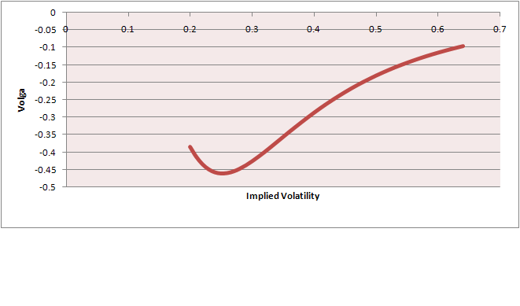
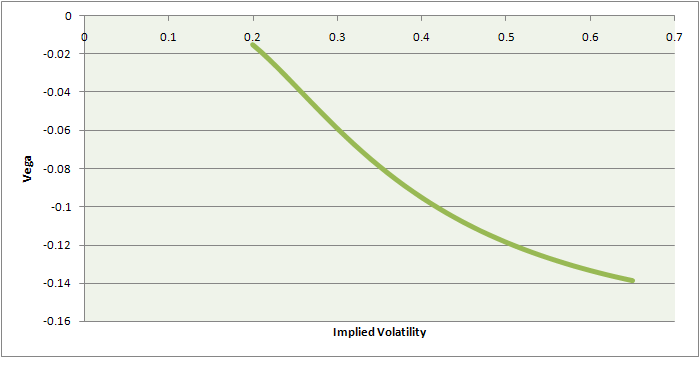

Structures & Market Volatility
Accumulators
This was one of the most popular products during 2009 - 2010 in Asia, mainly in HK markets. Extremely popular among them was Knock-Out daily accumulator, and a typical configuration was
-
1.Upside Barrier - 105% of Initial Spot
-
2.Accumulation Level - 85% of Initial Spot
-
3.Tenor - 12M
-
4.Underlyings - HSBC, some Chinese Banks, HSI
Definition: Accumulators as the name says allows the investor (who has purchased it) to accumulate a fixed number of shares at a discount (15% in this case) on a daily basis throughout the life of the product.
If the stock hits 105% of Initial spot, the product knocks out and there is no coupon for the investor. The client keeps the shares already discounted. If the stock hits below 85% of Initial spot, investor buys expensive stock.
Generally investor buys this product because he is bullish on the underlying.

Accumulators Driving Volatility
The hedging effect of these products causes significant skew flattening for the underlyings. Consider a long “DownSide” put profile, and the strike is set at the “accumulation level”. It is long vega and long gamma. Trader will put up a long stock position to hedge their exposure....
In accumulators the traders exposure will be influenced by the level as well as the barrier.
-
1.When the stock gets closer to the barrier the probability of knockout approaches 1, hence traders will reduce their position.
-
2.When stock gets closer to accumulation level probability of knockout falls and it will require increased exposure to long stock.
Due to delta hedging there is a dampening effect on stock movement as lower stock level causes buying and upper level causes selling. Long gamma is buy low sell high which overall leads to dampening affect on realized volatility.
It can be broken down into = Long Up And Out Call + Short Up and Out Put = Long Accumulator Position
The only difference is that the calls and puts are daily maturing so to be more precise it’s a daily knockout call + (short) daily knockout put. Call component is replicating the daily upside gain and the short put component is replicating losses below the strike level.
Now we can easily visualize the greeks
-
1.Vega is at max around the accumulation level due to Long Up and out Put (for the trader). As the stock falls the trader gets longer and longer vega and selling downside vega is required
-
2.If stock rises, and knocks out the traders are left with this downside vega hedge which they need to buy back.
So the effect of 1 & 2 is
1 ---> causing “When stock pulls back on the downside, volatility falls and skew flattens (due to sell vega)
2 ----> causing “When stock rallies, volatility rises and skew steepens”
This skew flattening and steepning will give rise to additional trading opportunities if you have a fair idea of accumulators in the current market. For example if the accumulator is a 12M maturity then traders will generally sell 3M volatility to hedge the long put.
Vega Convexity - Vol of Vol Behavior
Client accumulates stock at a discount to initial level which is 100, and lowest observed level is above 90.
The barriers 85 and 105 are never crossed so this stock makes an ideal case for investor. Volatility is lower on the upside so bullish stocks are preferred for structuring accumulators.

So we can see from the graph as stock volatility drops the vega exposure increases. To stay vega neutral trader needs to sell more downside vega (compare with vega/IV graph). This might create a downward spiral in volatility. A good trade against these accumulators is to buy downside puts as due to skew flattening they will trade at a cheaper price compared to upside calls. Collar trade can also be considered for vol skew.

The OTM Put (85 strike) has a vega convexity. In short put position vega rises (as implied falls). Since traders have sold downside volatility they are basically short vol of vol. This is simply a second order greek (volga). At lower levels of implied vol the vega exposure is more rather than on higher levels. We can check this by computing change in vol / change in vega for the above graph.....